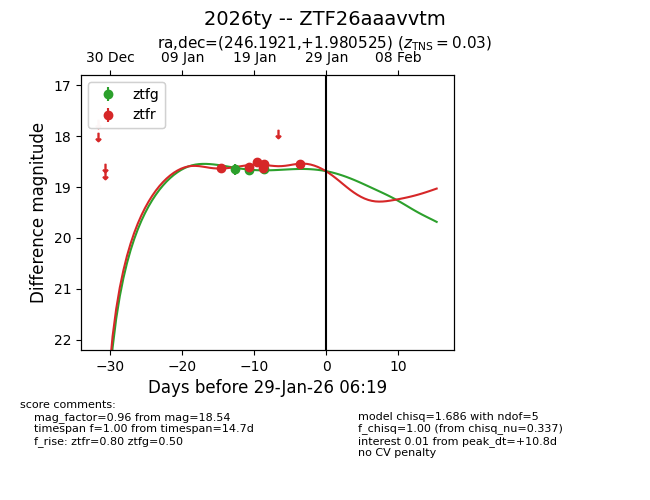
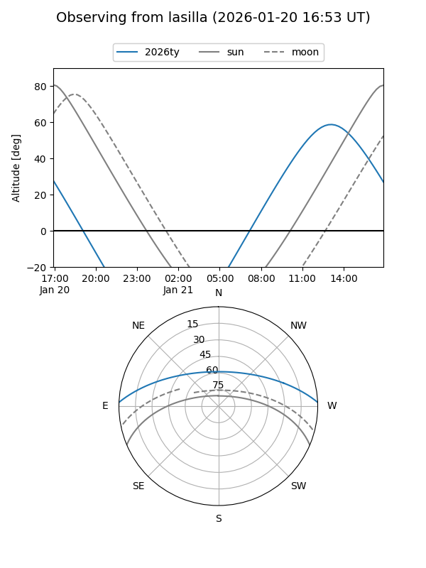
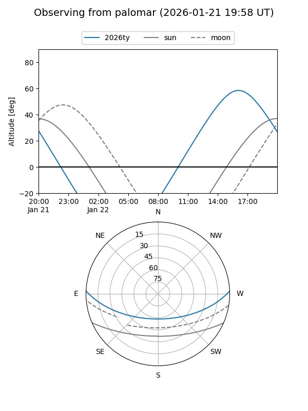
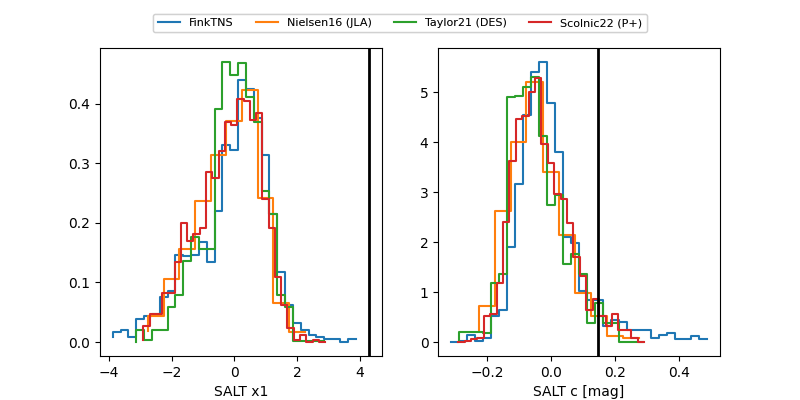

2026ty
Target 2026ty at 2026-01-21 20:26
Aliases and brokers:
FINK: link
Lasair: link
ALeRCE: link
TNS: link
YSE: link
alt names
ZTF26aaavvtm (ztf,fink_ztf)
2026ty (tns,yse)
Coordinates:
equatorial (ra, dec) = 246.1921,+1.98052
equatorial (HMS+DMS) = 16:24:46.12,+01:58:49.89
galactic (l, b) = (16.1745,+33.15552)
Flags:
Photometry:
last ztfg=18.65, ztfr=18.54
3 ztfg, 5 ztfr detections
Lightcurve

Visibility


Additional plots
